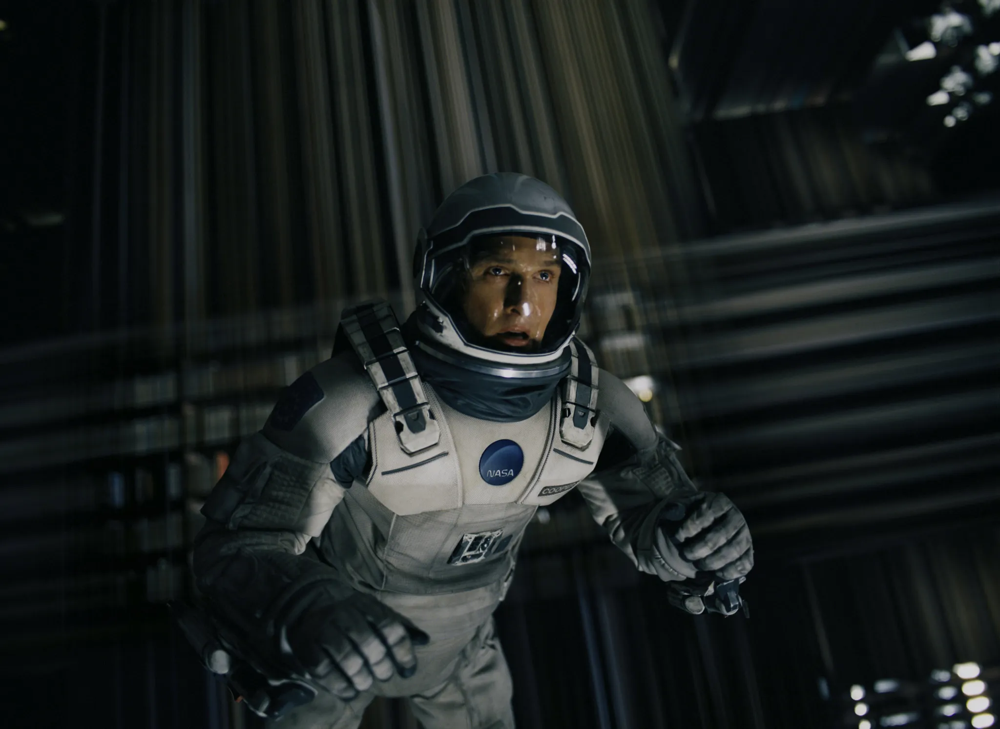
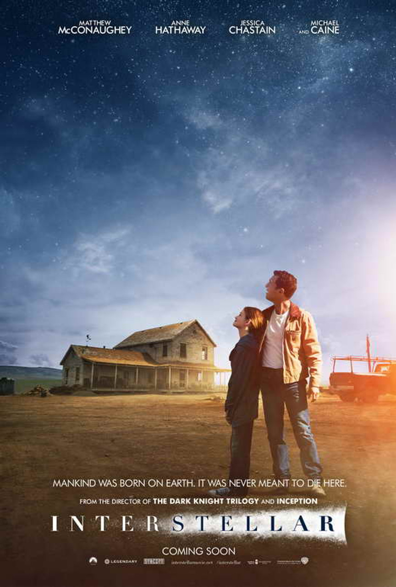
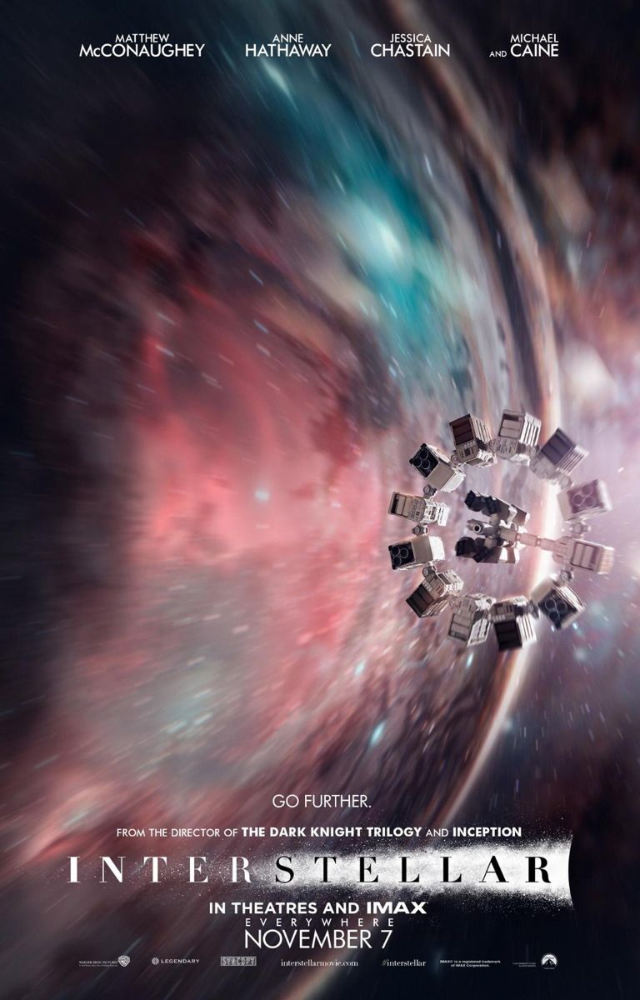
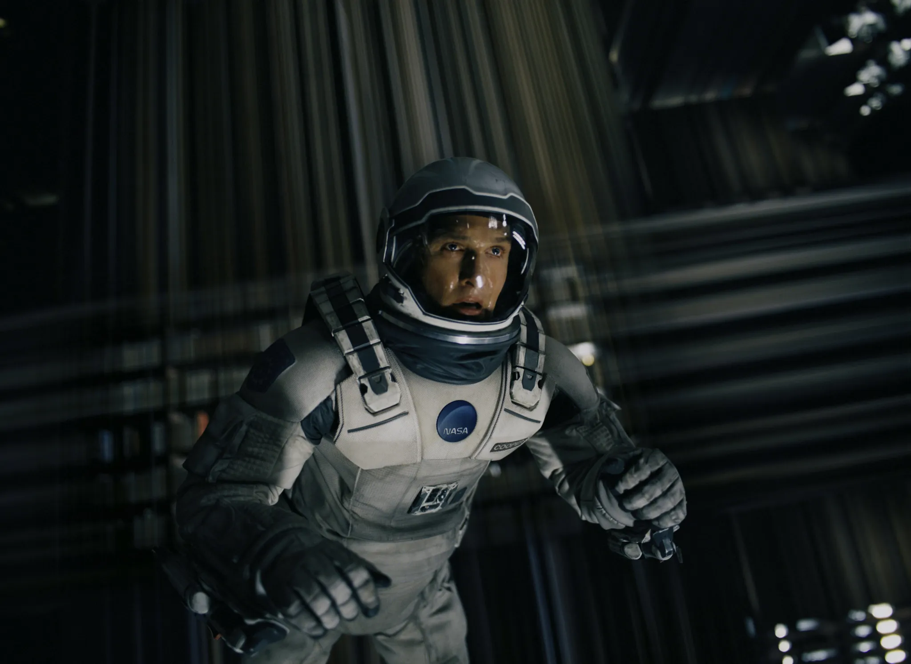
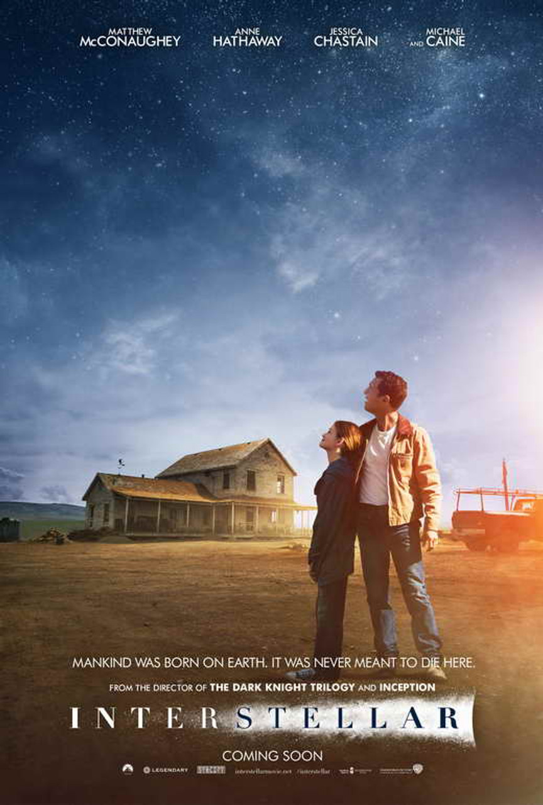
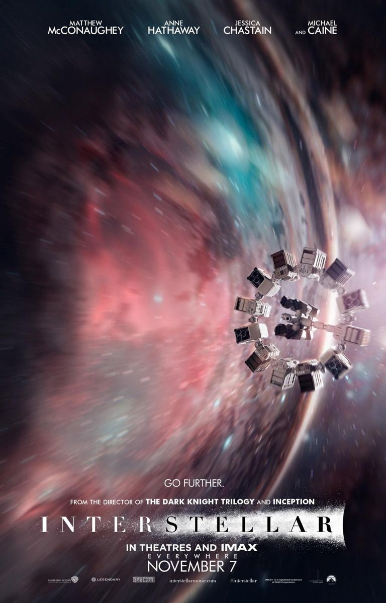
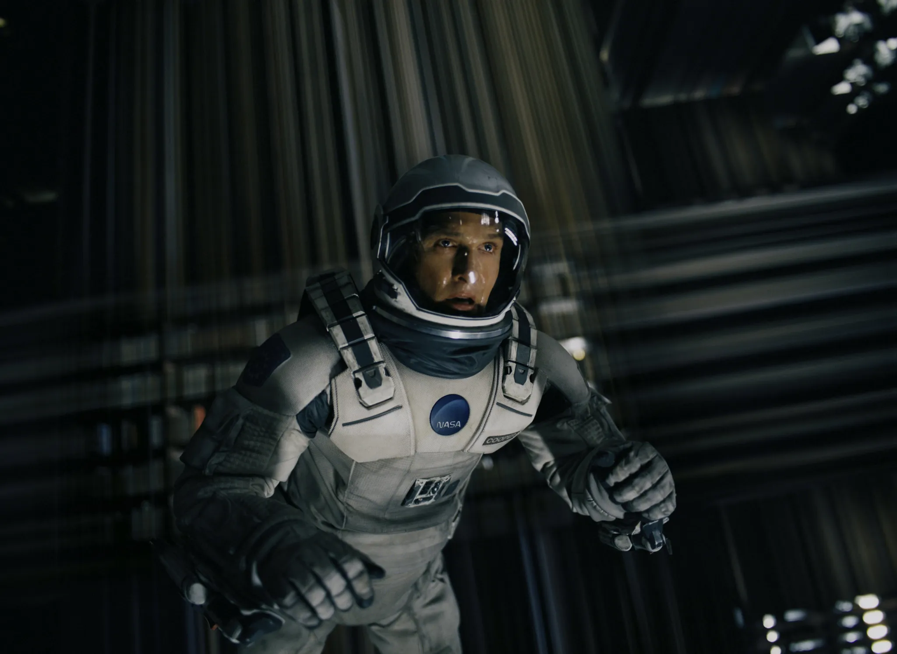
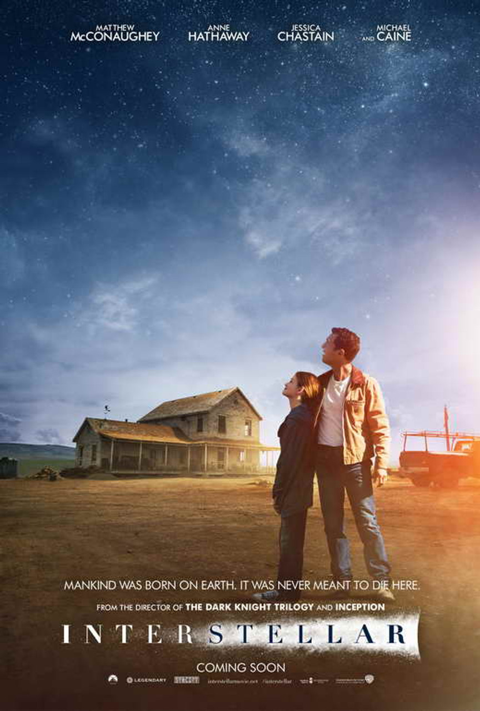
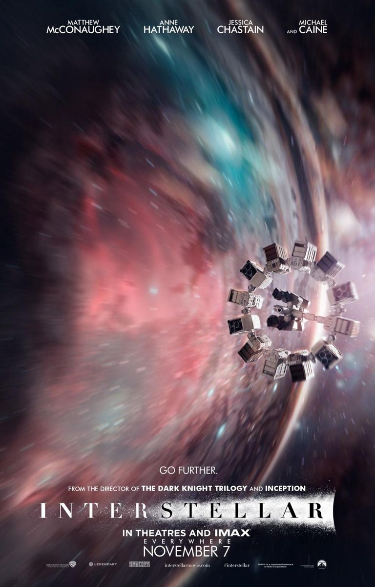

Filmmaking is more than just a hobby for me; it's a way to tell stories that transcend time and space, much like the journeys portrayed in my favorite movie, Interstellar. The movie's exploration of human connections and survival in the vastness of the universe inspires my creative vision.


